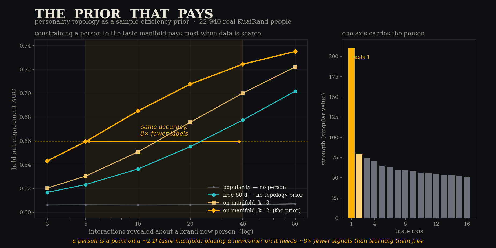
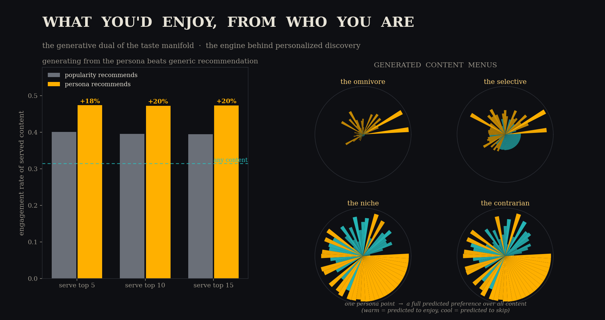
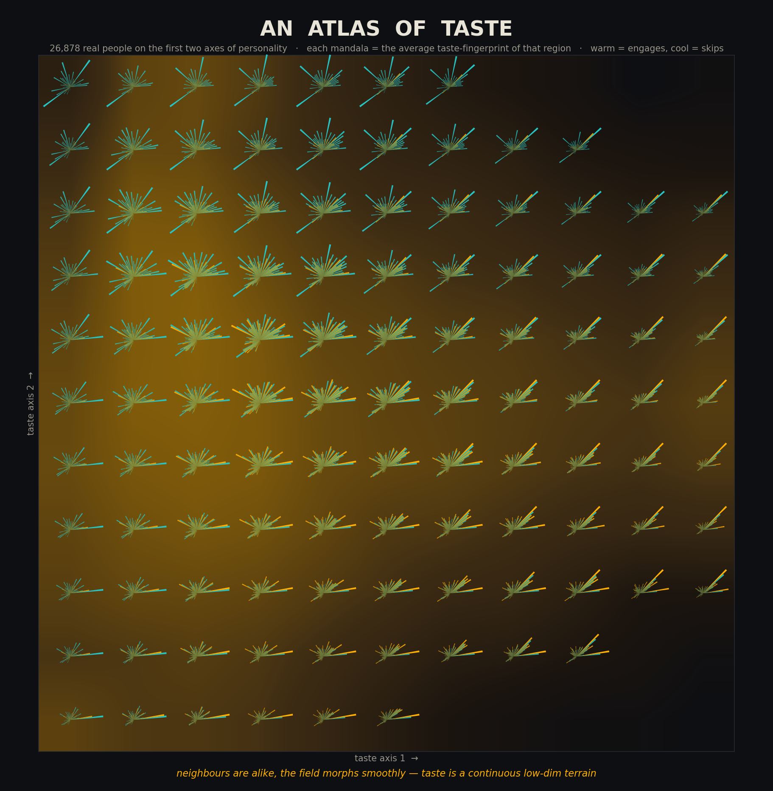
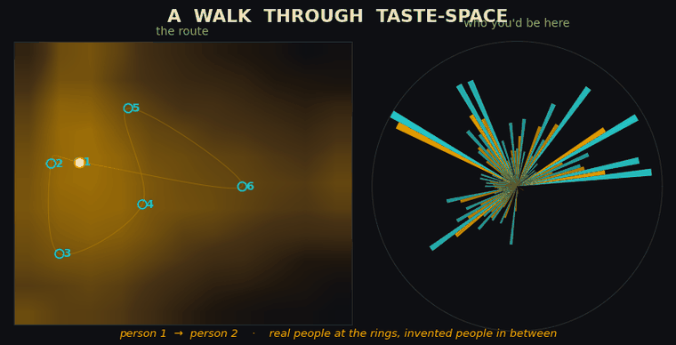
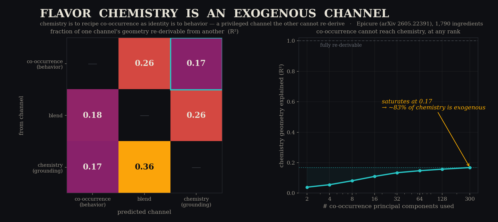
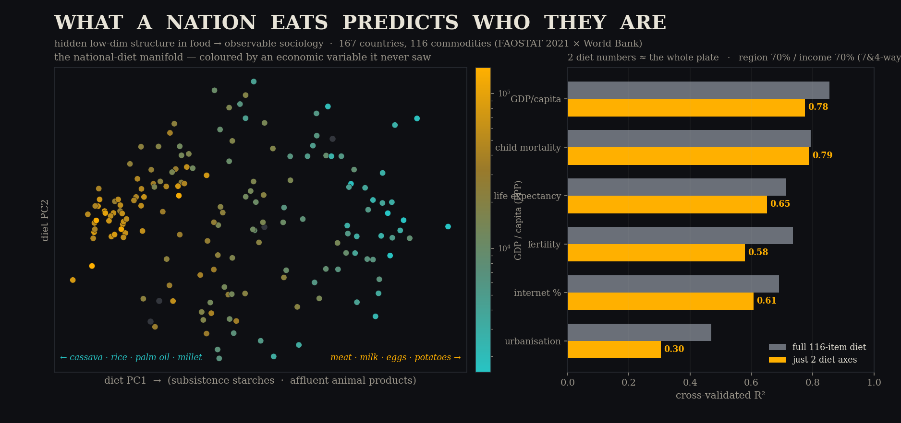
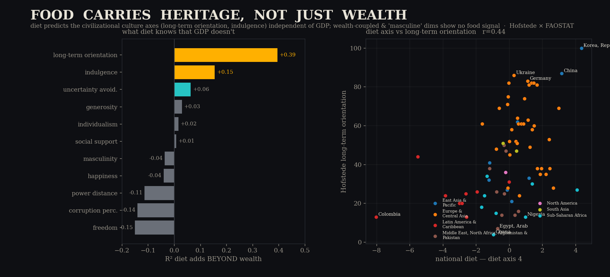

the personality-compressor program · measured results — in people, and in food
KuaiRand (22,940–26,878 users) · Blog Authorship (1,200 authors) · Epicure food embeddings · FAOSTAT (167 nations) · World Bank · Hofstede · GSM8K · OPSD arXiv 2601.18734 · June 2026
Cross-context identity-AUC: build a persona from half of someone's record, ask if it picks out their held-out record over other people's. Same protocol on every substrate.
The more deliberately someone expresses, the fatter the handle: one blog post already identifies its author at 0.73 AUC; shuffle control collapses to 0.497. Passive consumption is nearly pure popularity — explicit engagement (KuaiRand) restores a thin personal signal.
We implemented OPSD (on-policy self-distillation: one model, a teacher role that sees privileged info, per-token JSD on student rollouts) and used it as an instrument to classify the privilege.
| privileged info | type | OPSD outcome | meaning |
|---|---|---|---|
| a verified math solution | re-derivable | amortizes — student improves (OPSD > SFT) | compute can replace the hint |
| a personality / history | identifying (exogenous) | never amortizes — transfer ≤ floor at every model size | no amount of capacity re-derives who you are; the handle must be carried |
This is the session's central distinction: math hints are shortcuts to something already implied by the question; personality is new information about the world. The TPU scale sweep confirmed capacity doesn't change the verdict — but the handle that must be carried turns out to be tiny:
Constrain a newcomer to the learned 2-D taste manifold and 5 interactions place them as well as 40 place a free 60-parameter model (AUC .659). Lower k wins the cold start: MAN2 > MAN4 > MAN8 > MAN16 > FREE.
Choosing which interactions to observe (label-free D-optimal design on the coordinate) is no better than random — slightly worse. The manifold is so low-dim that ~3 incidental signals already saturate localization. The win is the constraint, not the selection — a stronger deployment story: no elicitation UX needed, the prior works on whatever a new user happens to do.
The prior beats its matched baseline at every N (not an artifact), but an in-context GRU wins overall (+.03 at N=3): order/context carries person-signal the bag-of-tags throws away. Striking consolation: a 2-parameter model lands within ~.01–.03 of a full neural net — most recoverable person-signal really is low-dimensional.
Infer who you are from one half of content-space (tags 0–29), predict what you'll like in the disjoint other half: as accurate as watching you there directly (.711 vs .720 at N=20; transfer even edges native at N=40). +0.097 AUC over popularity. Identity is a reusable substrate, not a per-domain fit.
Invert the map: from 20 interactions, infer the persona coordinate, generate the full predicted-preference profile over all content, serve the top of it. Held-out engagement on served content: 0.473 vs 0.395 (popularity) vs 0.314 (baseline). Stable across K=5/10/15. This is the discovery engine — swap anonymized tags for real content embeddings and it predicts what a specific person will enjoy.




If this structure — a low-dimensional manifold separating a derivable behavioral channel from an exogenous, must-be-carried identity channel — is a real law and not a quirk of personality data, it should appear in other domains. Food is the cleanest place to look. Epicure independently trained three sibling ingredient embeddings (1,790 foods) that differ only in what they see — recipe co-occurrence (what's cooked together = behavior) or shared flavor chemistry (what shares aroma compounds = grounding) — and rediscovered the entire stack: a low-dim manifold, linear taste directions, emergent culinary modes, and cuisine self-organizing with no supervision.
A label-free ridge map between the sibling embeddings: co-occurrence geometry explains only R²=0.17 of chemistry geometry (chance floor −0.02), and it saturates there at every rank. Chemistry is to recipe co-occurrence as identity is to behavior — a privileged channel the behavioral one cannot reconstruct. The controlled experiment personality could only gesture at, food made measurable: Epicure ships a co-occurrence-only and a chemistry-only embedding, trained identically.

The predictive turn: is there hidden, low-dimensional structure in what a society eats that predicts observable sociology? National food-supply vectors (FAOSTAT, 167 countries × 116 commodities, kg/capita/yr) against World Bank and cultural indicators.
A 2-D diet manifold predicts GDP/capita R²=0.78, child mortality 0.79, life expectancy 0.65; four axes classify world region at 71% (baseline 28%). Its first axis is a pure development gradient with zero economic input — meat·dairy·eggs at one pole, cassava·rice·palm-oil·millet at the other. The predictive content is genuinely ~2-dimensional.
Controlling for GDP separates two things inside food. Health/development signals are largely a wealth proxy — strip wealth and they vanish. But the civilizational heritage axes survive: diet predicts Hofstede long-term orientation at +0.39 and indulgence at +0.16 beyond wealth, while wealth-coupled traits (individualism, happiness) and "masculine" dims (masculinity, freedom, corruption) carry no food signal. The East-Asian thrift cluster falls out of a single diet axis on its own.

